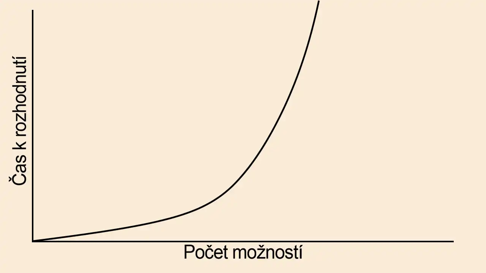
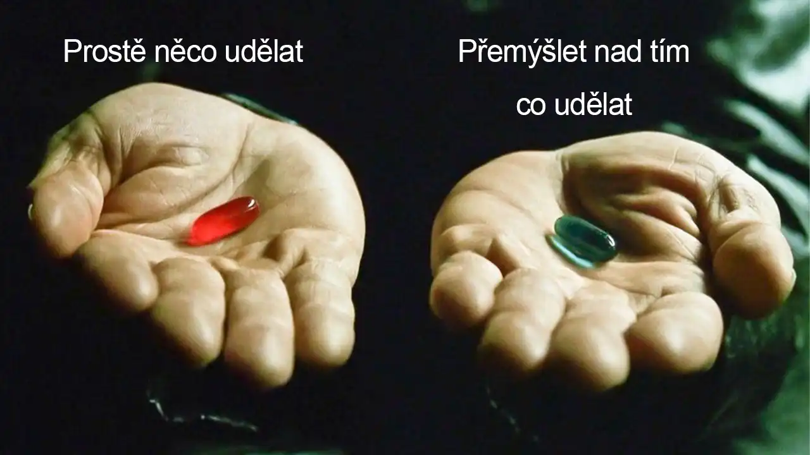
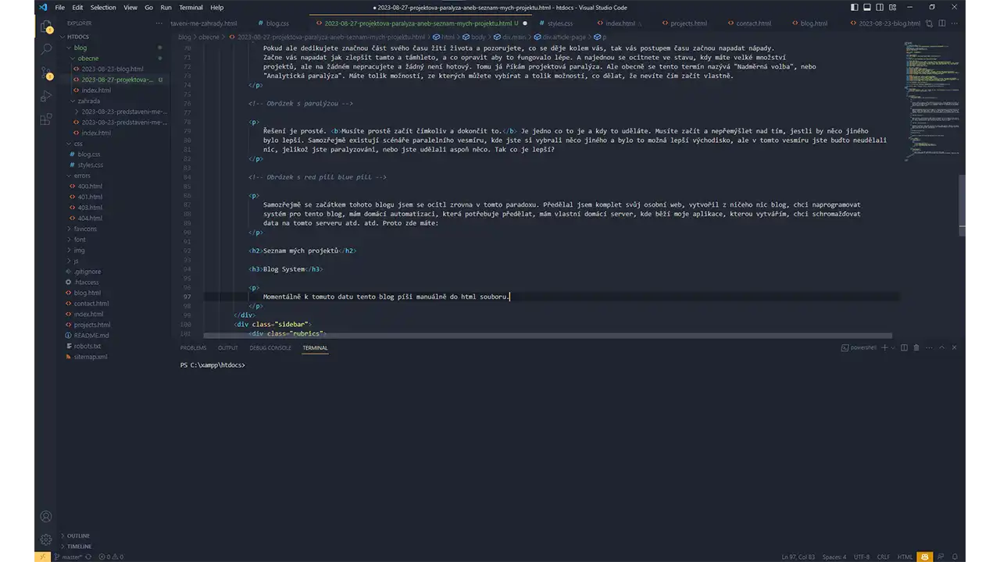
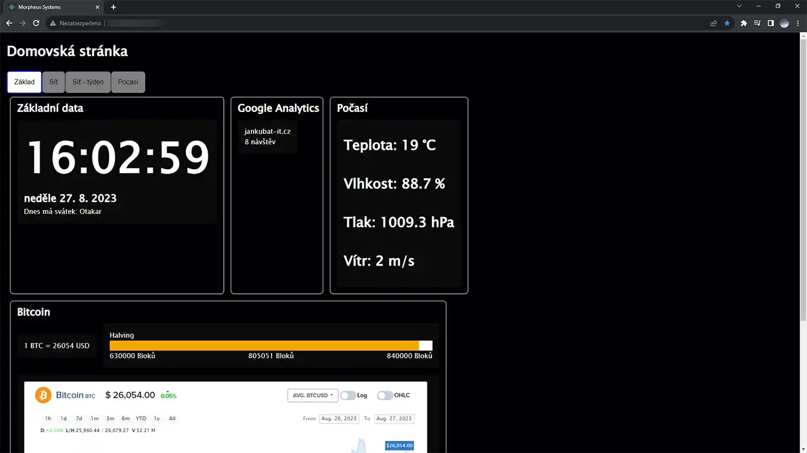

Zvídavý občan
Zvídavý občanProjektová Paralýza, Aneb Seznam Mých Projektů
Zdravím. Jistě ze sloganu a obsahu tohoto blogu jste zjistili, že mojí oblibou je se věnovat svým projektům a budovat své projekty. Jenže velkým problémem člověka, který má rád projekty je množství projektů. Dříve jsem měl potíže s vymýšlením projektů. Vždy jsem se cítil pod psa, jelikož mě nic nenapadalo. Hlavně mě nic nenapadalo do mého programátorského portfolia, což mě velice trápilo na střední škole.
Pokud ale dedikujete značnou část svého času žití života a pozorujete, co se děje kolem vás, tak vás postupem času začnou napadat nápady. Začne vás napadat jak zlepšit tamto a támhleto, a co opravit aby to fungovalo lépe. A najednou se ocitnete ve stavu, kdy máte velké množství projektů, ale na žádném nepracujete a žádný není hotový. Tomu já říkám projektová paralýza. Ale obecně se tento termín nazývá "Nadměrná volba", nebo "Analytická paralýza". Máte tolik možností, ze kterých můžete vybírat a tolik možností, co dělat, že nevíte čím začít vlastně.
Řešení je prosté. Musíte prostě začít čímkoliv a dokončit to. Je jedno co to je a kdy to uděláte. Musíte začít a nepřemýšlet nad tím, jestli by něco jiného bylo lepší. Samozřejmě existují scénáře paralelního vesmíru, kde jste si vybrali něco jiného a bylo to možná lepší východisko, ale v tomto vesmíru jste buďto neudělali nic, jelikož jste paralyzováni, nebo jste udělali aspoň něco. Tak co je lepší?
Samozřejmě se začátkem tohoto blogu jsem se ocitl zrovna v tomto paradoxu. Předělal jsem komplet svůj osobní web, vytvořil z ničeho nic blog, chci naprogramovat systém pro tento blog, mám domácí automatizaci, která potřebuje předělat, mám vlastní domácí server, kde běží moje aplikace, kterou vytvářím, chci schromažďovat data na tomto serveru atd. atd. Proto zde máte:
Seznam mých projektů
Blog System
Momentálně k tomuto datu tento blog píši manuálně do html souboru.

Což není moc praktické :D Je to až otravné, ale zase to má své kouzlo.
Můžu si dělat co chci a jak chci, ale celkem to radikálně znemožňuje účas více uživatelů, nějaký chytrý věci jako komentáře atd.
Proto jsem se rozhodl udělat na GitHubu Open Source Blog System pro všechny lidi, co nechtějí platit za něco a nebo používat Wordpress.
Bude se jednat o velice jednoduchý systém, aby ho mohl využívat i ten méně zkušenější. Teda snad :D
Home Panel
Home Panel je z názvu jakýsi typ panelu. Ano. Jedná se o mojí aplikaci, která je již funkční a běží na mém RPi 3 home serveru. Tento panel mám v budoucnu promítat na nějaké obrazovce. Zobrazuje veškeré data, které mě zajímají. Jako co je za den, kdo má svátek, jaká je cena BTC vůči USD, kolik bloků zbývá do halvingu, počasí, google analytics mého webu, momentální a historický využitý bandwidth mé sítě. Do budoucna mám v plánu získávat další data. Jako třeba data o vesmíru. S tím se pojí moje záliba v získávání dat. Miluju data. A chtěl bych je historicky uchovávat a na konci každého roku z nich dělat analýzi a grafy pro mé blízké :D Je to spíš takový niche.
Home Assistant
Home Assistant potká dřív nebo později každého, kdo se zajímá trochu více o domácí automatizaci. Je to velice silný nástroj na ovládání ruzných hračiček a věciček. Momentálně jím reguluji teplotu v koupelně, jelikož máme relativně kuriozní situaci v koupelně momentálně. Plus světla a různý senzory, kamery. Do budoucna musím předělat automatizace pro topení v koupelně, jelikož začínají kolidovat a nenavazují na sebe moc dobře.
Zahrada
O mé zahradě jsem zde napsal svůj první reálný neinfo blog post. Jedná se o kus trávy na našem domácím pozemku, o který se moc nestaralo. A já se rozhodl mu dát trochu péče. Je to super volnočasová aktivita a výsledek lze vidět relativně rychle. Ostatní ho samzořejmě vidí také a zlepšuje to pohled na náš pozemek :D Více detailů o mé zahradě zde
Budíky navíc do auta
Jsem relativně velký fanoušek aut a technologií. A proto jsem se rozhodl udělat si takovou menší radost v autě. Radost je zase relativní pojem. Jelikož má rád data, techniku a auta, tak jsem si z Číny koupil ověřený OBD Reader. Také mám doma starý tablet, ze kterého budu číst data o mém autu. Mé auto mi zatím předává informace jako: stav paliva, teplota vody, otáčky, rychlost, čas, počet ujetých kilometrů atd. Akorát já bych byl rád i za tepltou oleje, tlak oleje, spotřebu (tímto si nejsem jist zdali mé auto zvládá, ale v aplikaci tato kolonka byla), atd. Bohudík a bohužel nemám v autě turbo, takže nebudu mít ten nejzajímavější budík pro spoustu lidí :D
TLDR
Konec koncům jsem asi nevyjmenoval všechny a nechce se mi psát o všech, proto vám sem níže sepíši jednoduchý list pro ty, co to nechtějí číst. Já sám nevím, kolik projektu mám na mysli.- Blog System
- Home Panel
- Home Assistant
- Zahrada
- Budíky do auta
- Lednicový systém
- Home server
- Schromažďování dat